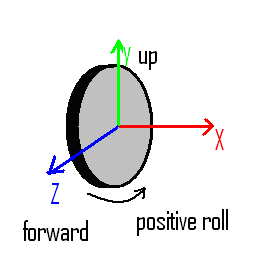
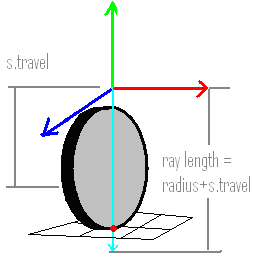

While some improvements have fixed the most immediate issues with the old raycast wheel model, the problems with simulation fidelity and lacking features remain. One important customer driven requirement to easily query wheel information made it necessary to introduce an API object which had a 1:1 correspondence to each simulated wheel. Previously, the capsule shape object was in 1:1 correspondence with the wheel, making it possible to share between wheels and other shapes.
To improve the general usability of the wheel API, the NxWheelShape was introduced, in addition to NxWheelShapeDesc.
NxWheelShape has a simple but extensible interface that permits simple saving and loading of the entire wheel state, as well as the modification of any properties during the simulation. It is also possible to query the contact status directly from the wheel shape. This provides a complete set of contact properties, including the local surface material of the other shape and the currently acting tire forces.
Similarly, it is possible to disable ALL friction using the NX_MF_DISABLE_FRICTION flag. This, however, is more in support of the new raycast wheel.
The main objective is to introduce a more advanced tire slip based friction model than this standard textbook approach. Many references are available to explain the textbook version (for example "Race Car Vehicle Dynamics" by Milliken). Tire slip based friction separates the overall friction force into a longitudinal component (responsible for the direction of rolling, braking and acceleration) and a lateral component (orthogonal to rolling, responsible for keeping the car properly oriented). In both directions it is first determined how much the tire is slipping (i.e., what the speed difference is between the rubber and the road). Then this slip value is mapped to a tire force by means of a lookup table filled with empirical tire data. The predominant property of real tires is that for a certain low slip, they can exert high tire forces as the rubber compensates for the slip by stretching, and maintains a static friction of sorts. Later, when the slip gets really high, the forces are reduced as the tire really starts to slide/spin, and dynamic friction starts to act.
Rather than using an explicit lookup table associated with a certain storage and performance overhead, NxWheelShape introduces NxTireFunctionDesc, which contains the coefficient parameters of two cubic Hermite splines, with which the tire force function is approximated. The coefficients are very intuitive as they are at the extrema of the function.
To compute the tire slip in the longitudinal (rolling) direction, it is necessary to know the tire's angular velocity. Initially the customer wanted the user to keep track of this velocity and pass the current value to the wheel shape at every simulation step; however, this turned out to be unsatisfactory, as it is very important to be able to simulate slipless rolling. In this case, the speed of the wheel must correspond almost exactly to the ground speed. As the ground speed changes every sub step due to the progressing simulation, if the user only makes the wheel speed respond every step, then for several sub steps the wheel may look like it is slipping when in fact the update is simply not happening in sync.
To remedy this, the wheel shape contains the update of the wheel speed by integrating the sum torque acting on the wheel, which is made up of the sum motor, braking, and ground induced torques. The ground induced torque is equivalent to the longitudinal tire force that is computed internally. The motor and brake torques are user inputs, and are treated separately, because a motor torque opposing the wheel’s rotation will make it reverse rotation, while a very large sustained brake torque will simply stop the wheel and lock it in place.
By providing a motor and brake axle torque input, it is no longer necessary to apply an explicit force simulating these effects to the car chassis, as was the case for the previous solution.
Further parameters necessitated by the simulation of the wheel rotation are the wheel radius (to map the axle angular velocity to a radial velocity at the contact patch), and the wheel mass (to map the axle torques to accelerations).
For improved convenience, it is no longer needed to rotate the wheel shape to steer the vehicle. Instead, a steering angle parameter can be set. Also, the ray direction is defined to cast along the negative y axis, which means that simulations using y as the up axis no longer need to turn the shape on its head to properly orient the wheel.
The below diagram illustrates the wheel shape axis conventions:

To simplify debugging, the wheel shape provides visualization of the wheel as part of the shape visualization mode.
The wheel suspension parameters are identical to the ones used by the old material based system, but are now stored directly in the wheel shape for convenience.
A new suspension travel parameter determines the length of the raycast, as seen in the figure below:

The meaning of the suspension NxSpringDesc::targetValue has also changed. It is now decoupled from the suspension travel, and is a value between 0 and 1 that determines at what % of whole travel the rest length of the spring should be, 0 mapping to the default of full extension along the suspension travel.
Another new feature is that when the suspension is completely compressed, a hard contact is generated in addition to the spring contact to make sure that a large force doesn't push the car with soft springs through the ground. This is a realistic simulation of a suspension that has bumped up against its hard stops.
Finally, the need to use addForce() to apply tire forces has been removed, as the explicit integration of such sustained forces, which are part of simulation loops, can lead to instability. The high tire forces acting at low velocities quickly become unstable because the forces not only stop the body, but depending on the size of the simulation step, can reverse its direction and lead to oscillation.
Instead, there is now a way to map the tire forces to a constraint that is passed into a solver. The results are unconditionally stable, even for very high tire forces. The mapping of the tire force to a constraint gave rise to another parameter, the stiffnessFactor of the tire descriptor. This parameter has no good physical interpretation and has simply to do with mapping the tire forces to a spring constant that the solver can work with.
Because the wheel implementation sorts through contacts along the ray and only takes the contact closest to the ray origin, multiple simultaneous contacts are not an issue.